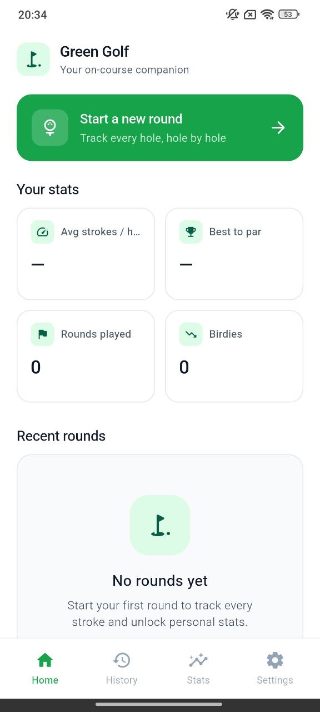
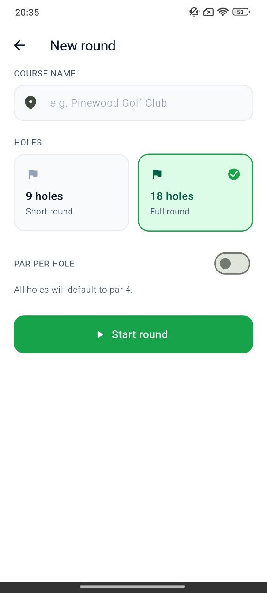
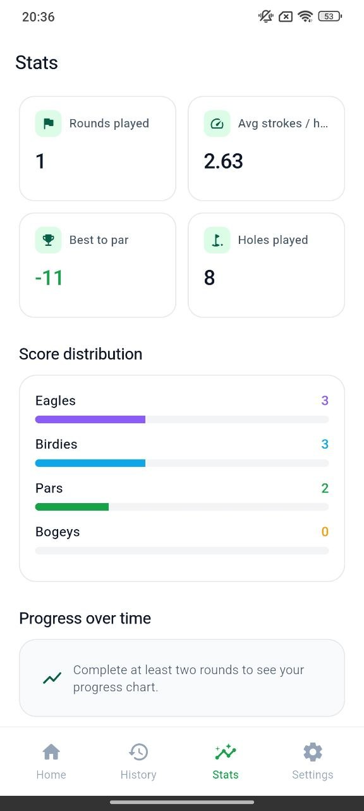
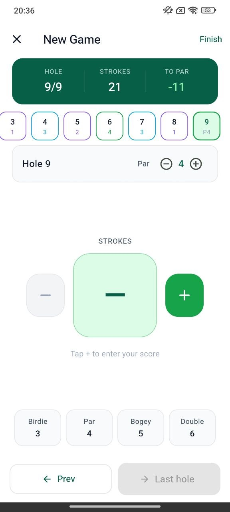
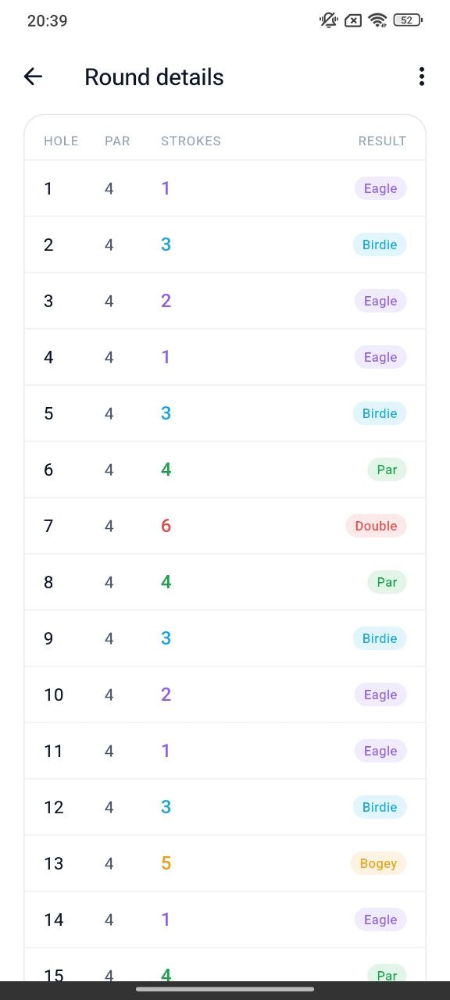

New round setup
Create a course round, choose 9 or 18 holes, and start tracking in seconds.
Sasal Green Golf helps players start new rounds, choose 9 or 18 holes, record strokes hole by hole, review score distribution, and track progress over time.



Premium features
The app keeps the golf experience simple: start a round, enter strokes, move hole by hole, and review the scorecard when the game is done.
Create a course round, choose 9 or 18 holes, and start tracking in seconds.
Enter strokes, adjust par, move between holes, and keep current score visible.
Review total strokes, to par, holes played, average per hole, and every result.
See eagles, birdies, pars, and bogeys with elegant progress bars and clear numbers.
Store recent rounds with course names, holes, strokes, to par, and play completion.
Bright white layout, premium green accents, soft cards, and clean on-course actions.
Round experience
Sasal Green Golf gives players a simple scoring flow: select holes, track par and strokes, move through the course, then review detailed results.

Screen showcase
Preview the core experience: home dashboard, new round, active game, round details, and statistics.

Why golfers like it
No clutter, no heavy setup. Just round creation, stroke tracking, score distribution, history, and stats in a bright, premium interface.
Large controls and clean hole cards help players update scores without distraction.
Detailed result tables show every hole, par, strokes, and outcome label.
Stats show average strokes, best to par, rounds played, and score distribution.
Workflow
Enter the course name and choose 9 holes or 18 holes for the game.
Use plus and minus controls to enter strokes for every hole.
Complete the round and generate a clean scorecard with results.
Check rounds played, average strokes, best score to par, holes played, and distribution.
Highlights
The app’s clean white cards, green highlights, and focused scoring screens make it easy to use during an actual round.
“The hole-by-hole score screen is simple enough to use while playing.”
Golf player“I like seeing score distribution after finishing a round.”
Weekend golfer“The history cards make it easy to compare recent games.”
Course regularDownload now
Download Sasal Green Golf and track every hole, stroke, birdie, eagle, round result, and score distribution in one clean golf app.